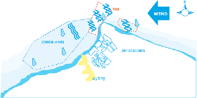
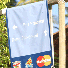

|

| Kto latem jezdzi do Brazylii? |
| Jak tam dotrzec? |
| Jericoacoara |
| Baza |
| Wiatr |
| Spot |
| Zdrowie |
| Jedzenie i wrazenia |
| Co poza windurfingiem? |
| Statystyki |
Spot

Pływy
W zależności od tego, czy jest odpływ czy przypływ, można stanąć na sporym obszarze lub nie. Przy przypływie czasem trudno jest odstartować, bo woda podchodzi blisko do brzegu, a wiatr jest głuszony przez skały. Warunki do pływania w zatoce zmieniają się zasadniczo: przy wysokim stanie wody akwen ma bardziej charakter wave; przy niskim bardziej freestyle. Aktualny stan i tendencję na planowaną sesje na wodzie trzeba uwzględnić przy doborze sprzętu.
Na wprost Clube dos Ventos ciągnie się fragment pokryty kamieniami obrośniętymi ostrygami – bardzo ostrymi ostrygami, dodajmy od siebie :(.
Przy odpływie nie ma problemu, bo pomiędzy kamieniami są piaszczyste przejścia. Należy uważać przy przypływie, kiedy nie widać kamieni i łatwo poranić sobie nogi.
W pozostałej części zatoki dno jest piaszczyste.
Fale
Prognoza wysokości fali wg windguru dla Jeri, z którą zapoznaliśmy się jeszcze w Polsce, mówiła o 2.5-3m. Rzeczywiście, fala, a właściwie swell, dochodziła w oceanie do wysokości masztu gdy wiało na żagle ~4m2. Blisko cypla, naprzeciwko Clube dos Ventos fale się formują i załamują osiągając 1-1.5m, tam gromadzi się miejscowa śmietanka i bywa dosyć gęsto.
Wiatr wieje skośnie od brzegu i można pływać front side (o ile się umie i o ile pozwolą napierający lokalesi wykonujący triki, których nie potrafimy nawet nazwać).
Pianki
Wyłącznie szorty i lycra. Właśociwie nie ma osób w piankach.
Rue Principal  |
|
|